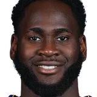

His best final NBA finish was #3 of 30, with the 2023-24 Minnesota Timberwolves. In his 99 games for 2 teams over 4 seasons they went 32–67 (32.3%), −35 games under .500, with an average final finish of 16.2.
Jump to: Record by opponent · Season by season · Teammate help
Compare Daishen Nix with…
Final NBA finish, season by season
Title Finals Other playoffs Missed playoffs. #1 = champion; the dashed line is last place that season. Each point opens that season's final standings.
All 30 teams ranked in 2023-24, his best finish (#3)Teammate help
 Anthony Edwards8.02 seasons
Anthony Edwards8.02 seasons Rudy Gobert4.52 seasons
Rudy Gobert4.52 seasons Karl-Anthony Towns1.01 season
Karl-Anthony Towns1.01 season
Career
Career records (W–L, W − L, with and without) include 2026-27 games through Nov. 22, 2026; season counts and finishes are through 2025-26. Each card opens its board in the same scope. How we count.

Latest completed seasons
Season by season
Newest first; every header sorts. Final NBA finish is the team's rank among all teams that season (#1 = champion) and opens that season's standings. "Without him" uses the team-season window; the span line counts only the games between his first and last game for the team.
| 2024-25 | #4 of 30 | 49–33 59.8% | Lost conf finals 1–4 | 3 of 82 | 3–0 100.0% | 46–33 58.2%span: N/A, gap N/A | +41.8 | |
| 2023-24 | #3 of 30 | 56–26 68.3% | Lost conf finals 1–4 | 15 of 82 | 11–4 73.3% | 45–22 67.2%span: 43–20, gap +5.1 | +6.2 | |
| 2022-23 | #28 of 30 | 22–60 26.8% | Missed playoffs | 57 of 82 | 15–42 26.3% | 7–18 28.0%span: 7–16, gap −4.1 | −1.7 | |
| 2021-22 | #30 of 30 | 20–62 24.4% | Missed playoffs | 24 of 82 | 3–21 12.5% | 17–41 29.3%span: 14–24, gap −24.3 | −16.8 |
On/off, starts and close games
From the lineup data, 1996-97 on. On/off is net points per 100 possessions with him on the floor minus off, a different unit from the win-rate gaps. Started and off the bench are team records in those games; close games are those within 5 points in the last 5 minutes with him on the floor.
Teammate help by season
Two separate numbers per season, each with every teammate that adds to it. Help this season = Teammates Score points for honors won that season by teammates who shared a game with him. Help coming in = the same teammates' honors from the season before. How help works.
- 2024-25
 Minnesota
Anthony Edwards All-NBA 2ndAll-Star43 gRudy Gobert All-Def 2nd0.53 g
Minnesota
Anthony Edwards All-NBA 2ndAll-Star43 gRudy Gobert All-Def 2nd0.53 g
Help this season: 4.5 = 4 Anthony Edwards + 0.5 Rudy Gobert
More: help coming in and other teammates
Help coming in (teammates' honors the season before): 10 = 4 Anthony Edwards + 4 Rudy Gobert + 1 Julius Randle + 0.5 Naz Reid + 0.5 Jaden McDaniels
Other teammates (no honors that season): Julius Randle 3 g, Mike Conley 3 g, Josh Minott 3 g, Luka Garza 3 g, Terrence Shannon 3 g, Jaden McDaniels 3 g, Naz Reid 3 g, Nickeil Alexander-Walker 3 g, Donte DiVincenzo 3 g, PJ Dozier 3 g
- 2023-24Minnesota
Rudy Gobert DPOYAll-Def 1st414 gAnthony Edwards All-NBA 2ndAll-Star413 gKarl-Anthony Towns All-Star110 g
 Naz Reid Sixth Man0.515 g
Naz Reid Sixth Man0.515 g Jaden McDaniels All-Def 2nd0.513 g
Jaden McDaniels All-Def 2nd0.513 g
Help this season: 10 = 4 Rudy Gobert + 4 Anthony Edwards + 1 Karl-Anthony Towns + 0.5 Naz Reid + 0.5 Jaden McDaniels
More: help coming in and other teammates
Help coming in (teammates' honors the season before): 1 = 1 Anthony Edwards
Other teammates (no honors that season): Nickeil Alexander-Walker 15 g, Kyle Anderson 14 g, Mike Conley 14 g, Josh Minott 14 g, Jordan McLaughlin 11 g, Leonard Miller 7 g, Wendell Moore 7 g, Luka Garza 7 g, Shake Milton 6 g, Monte Morris 6 g, Troy Brown 5 g, TJ Warren 4 g
- 2022-23
 Houston
Houston
 Tari Eason All-Rookie 2nd0.12557 g
Tari Eason All-Rookie 2nd0.12557 g Jabari Smith All-Rookie 2nd0.12556 g
Jabari Smith All-Rookie 2nd0.12556 g
Help this season: 0.25 = 0.125 Tari Eason + 0.125 Jabari Smith
More: help coming in and other teammates
Help coming in (teammates' honors the season before): 0.25 = 0.25 Jalen Green
Other teammates (no honors that season): KJ Martin 57 g, Usman Garuba 54 g, Alperen Sengun 51 g, Jalen Green 51 g, Josh Christopher 44 g, Kevin Porter 43 g, Eric Gordon 33 g, Garrison Mathews 32 g, Boban Marjanovic 26 g, Bruno Fernando 21 g, TyTy Washington 19 g, Jae'Sean Tate 13 g, Frank Kaminsky 6 g, Trevor Hudgins 3 g and 1 more
- 2021-22Houston
 Jalen Green All-Rookie 1st0.2522 g
Jalen Green All-Rookie 1st0.2522 g
Help this season: 0.25 = 0.25 Jalen Green
More: help coming in and other teammates
Help coming in (teammates' honors the season before): 0.25 = 0.25 Jae'Sean Tate
Other teammates (no honors that season): Josh Christopher 24 g, KJ Martin 23 g, Jae'Sean Tate 22 g, Kevin Porter 22 g, Garrison Mathews 21 g, Alperen Sengun 17 g, Christian Wood 15 g, Usman Garuba 11 g, David Nwaba 11 g, Eric Gordon 10 g, Bruno Fernando 8 g, Dennis Schroeder 7 g, Trevelin Queen 7 g, Armoni Brooks 5 g and 3 more
Record against each opponent
Regular season, through 2025-26 (2026-27 games not included): 99 games, 32–67, against 27 franchises.
Grouped by franchise (named as today); game lists keep each team's name that season. Filters and the tab are kept in the URL, so a filtered view can be shared.
| Games list | |||||||
|---|---|---|---|---|---|---|---|
| 7 | 1–6 | 14.3% | −5 | N/A | 2021-22 to 2023-24 | ||
| 7 | 3–4 | 42.9% | −1 | N/A | 2022-23 to 2024-25 | ||
| 7 | 4–3 | 57.1% | +1 | N/A | 2021-22 to 2023-24 | ||
| 6 | 1–5 | 16.7% | −4 | N/A | 2021-22 to 2022-23 | ||
| 5 | 1–4 | 20.0% | −3 | N/A | 2022-23 to 2024-25 | ||
| 5 | 1–4 | 20.0% | −3 | N/A | 2021-22 to 2023-24 | ||
| 5 | 1–4 | 20.0% | −3 | N/A | 2021-22 to 2023-24 | ||
| 4 | 3–1 | 75.0% | +2 | N/A | 2021-22 to 2022-23 | ||
| 4 | 2–2 | 50.0% | 0 | N/A | 2021-22 to 2022-23 | ||
| 4 | 0–4 | 0.0% | −4 | N/A | 2021-22 to 2022-23 | ||
| 4 | 1–3 | 25.0% | −2 | N/A | 2021-22 to 2022-23 | ||
| 4 | 1–3 | 25.0% | −2 | N/A | 2021-22 to 2023-24 | ||
| 4 | 3–1 | 75.0% | +2 | N/A | 2022-23 to 2023-24 | ||
| 3 | 0–3 | 0.0% | −3 | N/A | 2021-22 to 2022-23 | ||
| 3 | 1–2 | 33.3% | −1 | N/A | 2022-23 to 2024-25 | ||
| 3 | 0–3 | 0.0% | −3 | N/A | 2021-22 to 2022-23 | ||
| 3 | 2–1 | 66.7% | +1 | N/A | 2022-23 to 2023-24 | ||
| 3 | 0–3 | 0.0% | −3 | N/A | 2021-22 to 2022-23 | ||
| 3 | 1–2 | 33.3% | −1 | N/A | 2021-22 to 2022-23 | ||
| 2 | 1–1 | 50.0% | 0 | N/A | 2022-23 to 2023-24 | ||
| 2 | 0–2 | 0.0% | −2 | N/A | 2021-22 to 2022-23 | ||
| 2 | 0–2 | 0.0% | −2 | N/A | 2022-23 | ||
| 2 | 2–0 | 100.0% | +2 | N/A | 2022-23 | ||
| 2 | 0–2 | 0.0% | −2 | N/A | 2022-23 | ||
| 2 | 1–1 | 50.0% | 0 | N/A | 2022-23 | ||
| 2 | 2–0 | 100.0% | +2 | N/A | 2022-23 to 2023-24 | ||
| 1 | 0–1 | 0.0% | −1 | N/A | 2021-22 |
Rows add up to his career record in his games. A playoff series counts when he played in it; early round-robin games show as games only. How we count.
Arrival and departure
Team wins per 82 games the season before he arrived vs his first season there, and his last season vs the season after he left. He leaves a team only when his next season with games is for another team (or he never plays again); whole seasons he missed and came back from are one "Missed" row with the team's record without him. Per 82 so short seasons compare fairly. These are team records, not a measure of what he did.
| Left | after 2024-25 | 2024-25: 49–33 49.0 per 82 | 2025-26: 49–33 49.0 per 82 without him | +0.0 wins | |
| Arrived | 2023-24 | 2022-23: 42–40 42.0 per 82 | 2023-24: 56–26 56.0 per 82 | +14.0 wins | |
| Left | after 2022-23 | 2022-23: 22–60 22.0 per 82 | 2023-24: 41–41 41.0 per 82 without him | +19.0 wins | |
| Debut | 2021-22 | 2020-21: 17–55 19.4 per 82 | 2021-22: 20–62 20.0 per 82 | +0.6 wins |
Best duos
Team record in regular-season games both played, top 10 by win %, at least 50 games together.
- Jabari Smith
15–41 26.8%
- Tari Eason
15–42 26.3%
 Garrison Mathews
13–40 24.5%
Garrison Mathews
13–40 24.5% Kevin Porter
15–50 23.1%
Kevin Porter
15–50 23.1% KJ Martin
18–62 22.5%
KJ Martin
18–62 22.5% Alperen Sengun
15–53 22.1%
Alperen Sengun
15–53 22.1%
Usman Garuba 14–51 21.5%- Jalen Green
15–58 20.5%
 Josh Christopher
13–55 19.1%
Josh Christopher
13–55 19.1%
With and without his teammates
His 12 teammates with the most regular-season games together. "Together" is the team's record in the games both played for it; "Without him" is the team's record in the games Daishen Nix played for that team while the teammate was on it (between the teammate's first and last game for the team, the appearance span) and the teammate did not play. Fewer than 20 games without him: no gap. Games through Nov. 22, 2026. How we count.
- Together
- 18–62 22.5%
- Without him
- 0–1 0.0%
- Gap
- Too few games without him
- Jalen GreenHouston 2021-22 to 2022-23
- Together
- 15–58 20.5%
- Without him
- 3–5 37.5%
- Gap
- Too few games without him
- Alperen SengunHouston 2021-22 to 2022-23
- Together
- 15–53 22.1%
- Without him
- 3–10 23.1%
- Gap
- Too few games without him
- Josh ChristopherHouston 2021-22 to 2022-23
- Together
- 13–55 19.1%
- Without him
- 5–8 38.5%
- Gap
- Too few games without him
- Kevin PorterHouston 2021-22 to 2022-23
- Together
- 15–50 23.1%
- Without him
- 2–13 13.3%
- Gap
- Too few games without him
- Usman GarubaHouston 2021-22 to 2022-23
- Together
- 14–51 21.5%
- Without him
- 4–12 25.0%
- Gap
- Too few games without him
- Tari EasonHouston 2022-23
- Together
- 15–42 26.3%
- Without him
- N/A N/A
- Gap
- Too few games without him
- Jabari SmithHouston 2022-23
- Together
- 15–41 26.8%
- Without him
- 0–1 0.0%
- Gap
- Too few games without him
- Garrison MathewsHouston 2021-22 to 2022-23
- Together
- 13–40 24.5%
- Without him
- 1–9 10.0%
- Gap
- Too few games without him
 Eric GordonHouston 2021-22 to 2022-23
Eric GordonHouston 2021-22 to 2022-23- Together
- 12–31 27.9%
- Without him
- 1–13 7.1%
- Gap
- Too few games without him
 Jae'Sean TateHouston 2021-22 to 2022-23
Jae'Sean TateHouston 2021-22 to 2022-23- Together
- 5–30 14.3%
- Without him
- 9–25 26.5%
- Gap
- 12.2 points higher
 Bruno FernandoHouston 2021-22 to 2022-23
Bruno FernandoHouston 2021-22 to 2022-23- Together
- 8–21 27.6%
- Without him
- 5–19 20.8%
- Gap
- 6.8 points lower